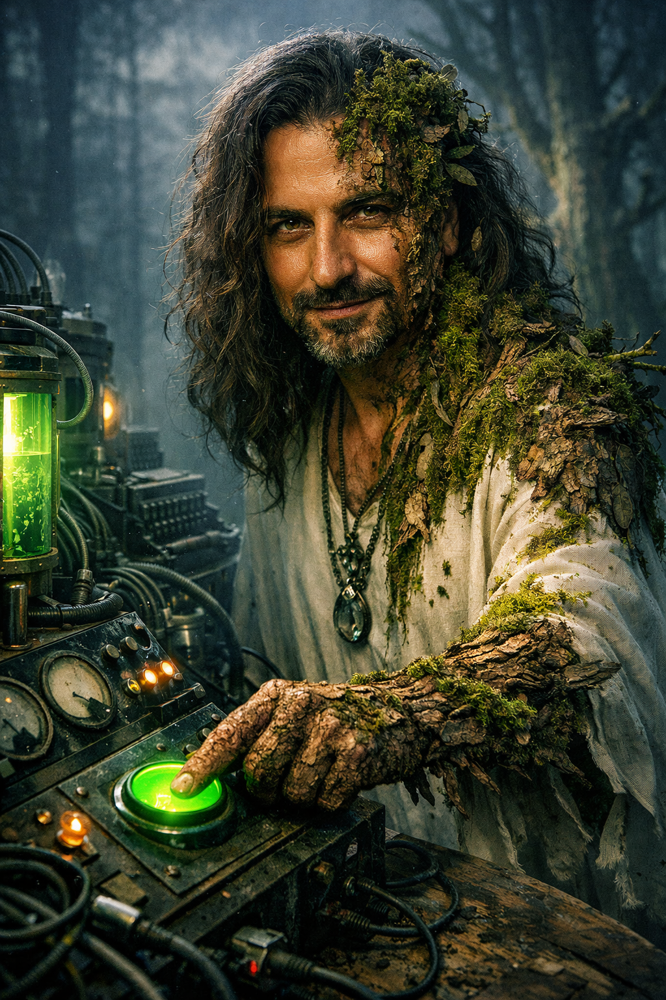

Shortstory — Opening split reference
En stigande tidvåg lyfter alla båtar
Del I av Plural. Novellserie från Förlagsdeckaren. En roman-impression: press och atmosfär före förklaring. Text besida bild vid öppningen — sedan flödar prosan i en enda kolumn.
"Med pannan i djupa veck över hur allt kommer att framstå för kommande generationer."
Förläggaren drömde att närområdet var oklart uppdelat i olika militanta grupperingar. Det var de nätter då han fortfarande kunde sova — det var de nätter som sedan slutade.
Några nätter senare ska han drömma att ön där de byggt sin ekoby fått bud om att en militant gruppering ska inta landet. Det är inte krig. Det är inte fred. Det är något mitt emellan — ett tillstånd som kräver ett namn det ännu inte fått.
Sömnen hade gjort honom till en ny man, igen.
Läs i läsaren →